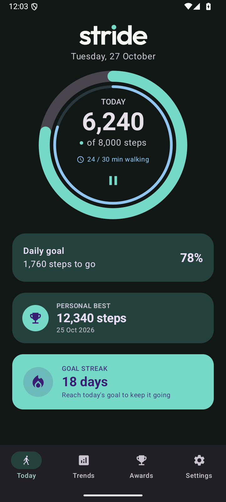

On your phone
Your step history, recorded walking time, goals and achievements stay available in the app.
Made for your everyday
The morning walk. The long way home. The small steps that add up. See your everyday progress with Stride.
Take a look aroundSteps, walking time and a reason to keep going.

Actual app screen · sample progress
Daily goals
Some days it’s about the steps. Others, the time you made for a walk. Follow both, with goals that work for you.
Example goal
Choose your own step target and follow your progress as the day unfolds. Pause tracking whenever you need to.
Your goal. Your pace.
Your history
Look back through your trends, weekly recap and goal calendar. Find the milestones you’ve earned along the way.
Your history, in perspective. See your progress across days, months and years.
Little milestones. Lasting motivation. Earn achievements for steps, consistency and recorded walking time.
A glance is enough. Keep your progress on your home screen with resizable widgets.
Privacy & backup
Stride works without a Google connection. Your progress lives on your phone, with file exports and optional Google Drive backup when you want them.
Read the privacy policyYour step history, recorded walking time, goals and achievements stay available in the app.
Back up to Drive’s private app-data area and restore on another device. General Drive files stay outside Stride’s access.
Have a question, some feedback or something that needs fixing? Get in touch.